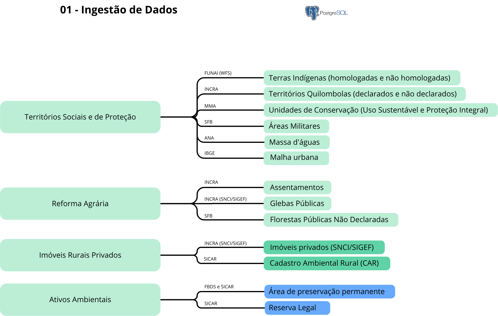

01. Ingestão dos Dados
Esta etapa consiste na aquisição, organização e armazenamento das principais bases fundiárias e ambientais utilizadas na construção da Malha Fundiária Ambiental. Os dados são obtidos a partir de fontes oficiais e integrados em um ambiente estruturado de banco de dados PostgreSQL, garantindo padronização e rastreabilidade.
Estrutura de Dados
Os dados são organizados em quatro grupos principais:
- Territórios sociais e de proteção
- Reforma agrária
- Imóveis rurais privados
- Ativos ambientais

Fontes de Dados
Territórios Sociais e de Proteção
| Dado | Fonte | URL |
|---|---|---|
| Terras Indígenas (homologadas e não homologadas) | FUNAI (WFS) | https://geoserver.funai.gov.br/geoserver/Funai/ows?service=WFS&version=1.0.0&request=GetFeature&typeName=Funai%3Atis_poligonais&maxFeatures=10000&outputFormat=SHAPE-ZIP |
| Territórios Quilombolas (declarados e não declarados) | INCRA | https://certificacao.incra.gov.br/csv_shp/export_shp.py |
| Unidades de Conservação (Uso Sustentável e Proteção Integral) | MMA | https://dados.gov.br/dados/conjuntos-dados/unidadesdeconservacao |
| Áreas Militares | SFB | https://mapas.florestal.gov.br/portal/home/item.html?id=7d477c1d52eb41028a9f0e04036206b8 |
| Massa d'águas | ANA | https://dadosabertos.ana.gov.br/datasets/4c606c38ee534b84bffe70ca6c8552c6_0/about |
| Malha urbana (Áreas Urbanizadas) | IBGE | https://www.ibge.gov.br/geociencias/cartas-e-mapas/redes-geograficas/15789-areas-urbanizadas.html?=&t=downloads |
Reforma Agrária
| Dado | Fonte | URL |
|---|---|---|
| Assentamentos | INCRA | https://certificacao.incra.gov.br/csv_shp/export_shp.py |
| Glebas Públicas | INCRA (SNCI/SIGEF) | https://certificacao.incra.gov.br/csv_shp/export_shp.py |
| Florestas Públicas Não Declaradas (FPND) | SFB | https://mapas.florestal.gov.br/portal/home/item.html?id=7d477c1d52eb41028a9f0e04036206b8 |
Imóveis Rurais Privados
| Dado | Fonte | URL |
|---|---|---|
| Imóveis privados | INCRA (SNCI/SIGEF) | https://certificacao.incra.gov.br/csv_shp/export_shp.py |
| Cadastro Ambiental Rural (CAR) | SICAR | https://consultapublica.car.gov.br/publico/imoveis/index |
Ativos Ambientais
| Dado | Fonte | URL |
|---|---|---|
| Área de preservação permanente (APP) | FBDS e SICAR | https://geo.fbds.org.br/ |
| Reserva Legal | SICAR | https://consultapublica.car.gov.br/publico/imoveis/index |
A integração dessas bases constitui o ponto de partida para as etapas seguintes de processamento, onde são realizadas correções topológicas, resolução de sobreposições e integração com ativos ambientais.